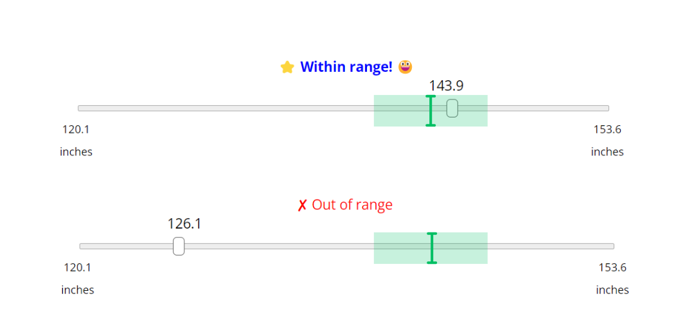
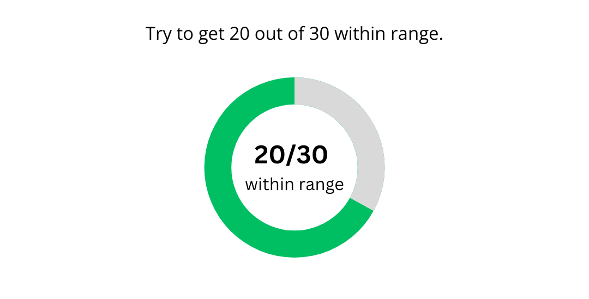
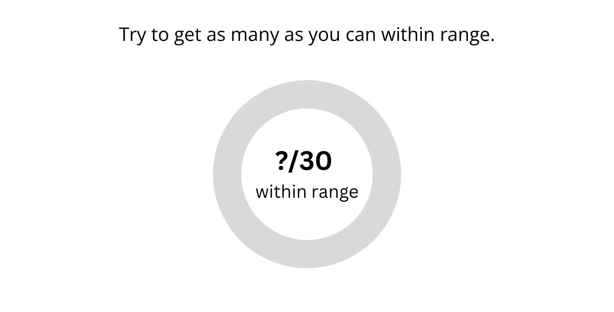
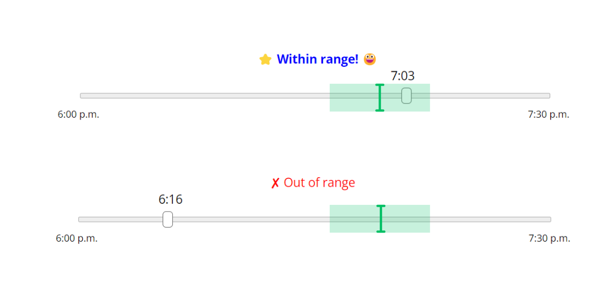

<!DOCTYPE html>
<html>
  <head>
    <title>Computer Game</title>
    <script src="jspsych-7.0/dist/jspsych.js"></script>
    <script src="jspsych-7.0/dist/plugin-distance-slider-binary.js"></script>
    <script src="jspsych-7.0/dist/plugin-distance-slider-response.js"></script>
    <script src="jspsych-7.0/dist/plugin-html-button-response.js"></script>
    <script src="jspsych-7.0/dist/plugin-html-keyboard-response.js"></script>
    <script src="jspsych-7.0/dist/plugin-image-button-response.js"></script>
    <script src="jspsych-7.0/dist/plugin-preload.js"></script>
    <script src="jspsych-7.0/dist/plugin-time-slider-binary.js"></script>
    <script src="jspsych-7.0/dist/plugin-time-slider-response.js"></script>
    <script src="jspsych-7.0/dist/plugin-survey-html-form.js"></script>
    <script src="jspsych-7.0/dist/plugin-survey-image-likert.js"></script>
    <script src="jspsych-7.0/dist/plugin-survey-likert.js"></script>
    <script src="jspsych-7.0/dist/plugin-fullscreen.js"></script>
    <script src="jspsych-7.0/dist/plugin-survey-text.js"></script>
    <script src="jspsych-7.0/dist/plugin-survey-multi-choice.js"></script>
    <script src="jspsych-7.0/dist/plugin-survey-multi-select.js"></script>
    <link href="jspsych-7.0/dist/jspsych.css" rel="stylesheet" type="text/css" />
    <style>
    body, html {
      width: 100%;
      height: 100%;
      margin: 0;
      padding: 0;
      overflow: hidden; /* Hide scroll bars */
    }
    .jspsych-content-wrapper {
      width: 100%;
      height: 100%;
      display: flex;
      justify-content: center;
      align-items: center;
    }
    .jspsych-content {
      max-width: 100%;
      box-sizing: border-box; /* Include padding and border in element's total width and height */
      padding: 20px; /* Add padding to the content */
      transition: transform 0.3s ease; /* Smooth transition for scaling */
    }
  </style>
  </head>
  <body></body>
  <script>

const jsPsych = initJsPsych();

var images_block_1 = [
'img/distance_campus_01.jpg',
'img/distance_campus_02.jpg',
'img/distance_campus_03.jpg',
'img/distance_campus_04.jpg',
'img/distance_campus_05.jpg',
'img/distance_campus_06.jpg',
'img/distance_campus_07.jpg',
'img/distance_campus_08.jpg',
'img/distance_campus_09.jpg',
'img/distance_campus_10.jpg',
'img/distance_campus_11.jpg',
'img/distance_campus_12.jpg',
'img/distance_campus_13.jpg',
'img/distance_campus_14.jpg',
'img/distance_campus_15.jpg',
'img/distance_campus_16.jpg',
'img/distance_campus_17.jpg',
'img/distance_campus_18.jpg',
'img/distance_campus_19.jpg',
'img/distance_campus_20.jpg',
'img/distance_campus_21.jpg',
'img/distance_campus_22.jpg',
'img/distance_campus_23.jpg',
'img/distance_campus_24.jpg',
'img/distance_campus_25.jpg',
'img/distance_campus_26.jpg',
'img/distance_campus_27.jpg',
'img/distance_campus_28.jpg',
'img/distance_campus_29.jpg',
'img/distance_campus_30.jpg',
'img/time_campus_01.jpg',
'img/time_campus_02.jpg',
'img/time_campus_03.jpg',
'img/time_campus_04.jpg',
'img/time_campus_05.jpg',
'img/time_campus_06.jpg',
'img/time_campus_07.jpg',
'img/time_campus_08.jpg',
'img/time_campus_09.jpg',
'img/time_campus_10.jpg',
'img/time_campus_11.jpg',
'img/time_campus_12.jpg',
'img/time_campus_13.jpg',
'img/time_campus_14.jpg',
'img/time_campus_15.jpg',
'img/time_campus_16.jpg',
'img/time_campus_17.jpg',
'img/time_campus_18.jpg',
'img/time_campus_19.jpg',
'img/time_campus_20.jpg',
'img/time_campus_21.jpg',
'img/time_campus_22.jpg',
'img/time_campus_23.jpg',
'img/time_campus_24.jpg',
'img/time_campus_25.jpg',
'img/time_campus_26.jpg',
'img/time_campus_27.jpg',
'img/time_campus_28.jpg',
'img/time_campus_29.jpg',
'img/time_campus_30.jpg',
'img/distance_park_01.jpg',
'img/distance_park_02.jpg',
'img/distance_park_03.jpg',
'img/distance_park_04.jpg',
'img/distance_park_05.jpg',
'img/distance_park_06.jpg',
'img/distance_park_07.jpg',
'img/distance_park_08.jpg',
'img/distance_park_09.jpg',
'img/distance_park_10.jpg',
'img/distance_park_11.jpg',
'img/distance_park_12.jpg',
'img/distance_park_13.jpg',
'img/distance_park_14.jpg',
'img/distance_park_15.jpg',
'img/distance_park_16.jpg',
'img/distance_park_17.jpg',
'img/distance_park_18.jpg',
'img/distance_park_19.jpg',
'img/distance_park_20.jpg',
'img/distance_park_21.jpg',
'img/distance_park_22.jpg',
'img/distance_park_23.jpg',
'img/distance_park_24.jpg',
'img/distance_park_25.jpg',
'img/distance_park_26.jpg',
'img/distance_park_27.jpg',
'img/distance_park_28.jpg',
'img/distance_park_29.jpg',
'img/distance_park_30.jpg',
'img/time_park_01.jpg',
'img/time_park_02.jpg',
'img/time_park_03.jpg',
'img/time_park_04.jpg',
'img/time_park_05.jpg',
'img/time_park_06.jpg',
'img/time_park_07.jpg',
'img/time_park_08.jpg',
'img/time_park_09.jpg',
'img/time_park_10.jpg',
'img/time_park_11.jpg',
'img/time_park_12.jpg',
'img/time_park_13.jpg',
'img/time_park_14.jpg',
'img/time_park_15.jpg',
'img/time_park_16.jpg',
'img/time_park_17.jpg',
'img/time_park_18.jpg',
'img/time_park_19.jpg',
'img/time_park_20.jpg',
'img/time_park_21.jpg',
'img/time_park_22.jpg',
'img/time_park_23.jpg',
'img/time_park_24.jpg',
'img/time_park_25.jpg',
'img/time_park_26.jpg',
'img/time_park_27.jpg',
'img/time_park_28.jpg',
'img/time_park_29.jpg',
'img/time_park_30.jpg',
'img/time_instructions.png',
'img/distance_instructions.png',
'img/time_instructions_crop.png',
'img/distance_instructions_crop.png',
'img/goal_specific.png',
'img/goal_nonspecific.png',
'img/time_instructions_within_range.png',
'img/distance_instructions_within_range.png',
'img/1.png',
'img/2.png',
'img/3.png',
'img/4.png',
'img/5.png',
'img/6.png',
'img/7.png',
'img/8.png',
'img/9.png',
'img/10.png',
'img/11.png',
'img/12.png',
'img/13.png',
'img/14.png',
'img/15.png',
'img/16.png',
'img/17.png',
'img/18.png',
'img/19.png',
'img/20.png',
'img/21.png',
'img/22.png',
'img/23.png',
'img/24.png',
'img/v1.png',
'img/v2.png',
'img/v3.png',
'img/v4.png',
'img/v5.png',
'img/v6.png',
'img/v7.png',
'img/v8.png',
'img/v9.png',
'img/v10.png',
'img/v11.png',
'img/v12.png',
'img/v13.png',
'img/v14.png',
'img/v15.png',
'img/v16.png',
'img/v17.png',
'img/v18.png',
'img/v19.png',
'img/v20.png',
'img/v21.png',
'img/v22.png',
'img/v23.png',
'img/v24.png',
'img/NEG_nonspecific.png',
'img/POS_nonspecific.png',
'img/NEU_nonspecific.png',
'img/NEG_specific.png',
'img/POS_specific.png',
'img/NEU_specific.png',
];

  var preload_1 = {//manual
    type: jsPsychPreload,
    images: images_block_1
  };

  var preload_2 = {//auto
    type: jsPsychPreload,
    auto_preload: true,
  };
  var preload = {
    timeline: [
      preload_1,
      preload_2
      ]
    }
/*enter fullscreen*/

var enter_fullscreen = {
      type: jsPsychFullscreen,
      fullscreen_mode: true
    }

/* 0 - consent */

var consent = {
  type: jsPsychHtmlButtonResponse,
  stimulus: "<h2>Consent to Participate in Research<br></h2>"+
'<div style="text-align: left;"><p><b>Basic Study Information</b></p>'+

"<p><b>Title of the Project</b>: Language and Cognitive Development in Childhood</p>"+

"<p><b>Principal Investigator</b>: Katharine Tillman, Ph.D., University of Texas at Austin</p>"+

'<div style="text-align: left;"><p><b>Invitation to be Part of a Research Study</b>: You are invited to be part of a research study. This consent form will help you choose whether or not to participate in the study. Feel free to ask if anything is not clear in this consent form.</p>'+

"<p><b>What is the study about and why are we doing it?</b><br>"+
"This a research study about how people learn new words and concepts, and how language and cognitive development are related. We study how people think about objects, numbers, time, colors, and cause-and-effect relationships, and how they learn language related to these concepts. The purpose of this study is to understand how people's understanding of these concepts develops.</p>" + 

"<p><b>What will happen if you take part in this study?</b></br>"+
"If you agree to take part in this study, you may be asked to: Listen to sentences or stories, count, sort, label, make judgments about, or describe objects, evaluate statements about objects or pictures, choose which of two pictures or sets of objects better matches a sentence.</p>"+

"<p><b>How long will you be in this study and how many people will be in the study?</b></br>"+
"Participation in this study will last 15-20 minutes and will include approximately 300 adult participants.</p>"+

"<p><b>What risks and discomforts might you experience from being in this study?</b></br>"+
"There are no foreseeable risks to participating in this study.</p>"+

"<p><b>How could you benefit from this study?</b></br>"+
"You will receive no direct benefit from participating in this study; however, your participation will contribute to society by improving our understanding of how people learn.</p>"+

"<p><b>What will happen to the samples and/or data we collect from you?</b></br>"+
"As part of this study we will collect basic demographics information and task results. These data are de-identified and kept on a secure, encrypted server for 3 years after study conclusion.</p>"+

"<p><b>How will we protect your information?</b></br>"+
"In order to ensure participants’ privacy, electronic files will be password protected and written forms will be kept in locked file. This data will always be kept separate from documents containing identifying information, and will be de-identified using subject numbers. Data will be kept indefinitely as study data has the potential to be analyzed in new ways. MTurk Worker IDs will be used for compensation tracking purposes only. They will not be shared with outside researchers and will be removed from the final dataset and deleted at the end of the project. If it becomes necessary for the Institutional Review Board to review the study records, information that can be linked to you will be protected to the extent permitted by law. Your research records will not be released without your consent unless required by law or a court order. The data resulting from your participation may be made available to other researchers in the future for research purposes not detailed within this consent form. In these cases, the data will contain no identifying information that could associate it with you, or with your participation in any study.</p>"+

"<p><b>What will happen to the information we collect about you after the study is over?</b></br>"+
"We will keep your research data to use for comparison analysis in future studies for up to 3 years. Your name and other information that can directly identify them will be kept secure and stored separately from the research data collected as part of the project.</p>"+

"<p><b>How will we compensate you for being part of the study?</b></br>"+
"Students participating through SONA will receive 1 credit. Amazon Mechanical Turk adult participants will be paid a small amount determined by the length of the experiment and at a rate comparable to that of other experiments/tasks posted on the website. For tasks that take less than 5 minutes to complete, participants will be paid $0.50, for tasks that take 5-15 minutes, participants will be paid $1.00, and for tasks that take 15-30 minutes, participants will be paid $3.00. Participants are paid a flat fee for completing a task (i.e., this fee is not prorated based on the actual amount of time they spend on the task).</p>"+

"<p><b>Your Participation in this Study is Voluntary</b></br>"+
"It is totally up to you to decide to be in this research study. Participating in this study is voluntary. Your decision to participate will not affect your relationship with The University of Texas at Austin. You will not lose any benefits or rights you already had if you decide not to participate. Even if you decide to be part of the study now, you may change your mind and stop at any time. You do not have to answer any questions you do not want to answer.</p>"+

"<p><b>Contact Information for the Study Team:</b><br> If you have any questions about this research, you may contact:<br> Katharine Tillman, Principal Investigator | Phone: 512-232-4459 | Email: ktillman@utexas.edu</br> The University of Texas at Austin Institutional Review Board | Phone: 512-232-1543 | Email: irb@austin.utexas.edu</b></p>"+

"<p><b>Your Consent:</b></br>"+
"If you have any questions about the study after you sign this document, you can contact the study team using the information provided above.<br>By clicking 'Accept and Continue,' you are agreeing to be in this study.</p></div>",
    choices: ["Accept and Continue"]
}

/* 1 - demographics survey */
 var demographics_1 = {
    type: jsPsychSurveyHtmlForm,
    preamble: '<h2>DEMOGRAPHICS QUESTIONNAIRE </h2><p><i>Please fill out this demographic form. You may skip any questions you do not wish to answer.</i></p>',
    html: `<p><b>First Name: </b><input type="text" name="name-first"><b> Last Name: </b><input type="text" name="name-last"></p>

    <p><b>Date of birth (MM/DD/YYYY): </b><input type="text" name="birthdate"></p>

    <p><b>Race (More than one box may be selected): </b>
      <br><input type="checkbox" name="race-amerindian"> American Indian or Alaskan Native
      <br><input type="checkbox" name="race-asian"> Asian
      <br><input type="checkbox" name="race-black"> Black or African American
      <br><input type="checkbox" name="race-pacific"> Native Hawaiian or Pacific Islander
      <br><input type="checkbox" name="race-white"> White or Caucasian
      <br><input type="checkbox" name="race-undisclosed"> Do not wish to diclose
    </p>

    `
        //hi this is shaan.
  }


var demographics_2 = {
  type: jsPsychSurveyMultiChoice,
  preamble: '<h2>DEMOGRAPHICS QUESTIONNAIRE </h2><p><i>Please fill out this demographic form. You may skip any questions you do not wish to answer.</i></p>',
  questions: [
  {
    prompt: "<b>Ethnicity:</b>",
    name: 'ethnicity',
    options: ['Hispanic or Latino', 'Non-Hispanic or Non-Latino', 'Do not wish to disclose'],
    required: false
  },
  {
    prompt: "<b>Sex:</b>",
    name: 'sex',
    options: ['Female', 'Male', 'Non-binary', 'Do not wish to disclose'],
    required: false
  },
  {
    prompt: '<b>What is the highest level of education you have completed?</b>',
    name: 'education',
    options: ['Some High School', 'High School Degree', 'Some College', 'College Degree', 'Technical/AA Degree', 'Some Graduate School', 'Graduate Degree', 'Unsure/Do not wish to disclose'],
    required: false
  },
  {
    prompt: "<b>Which measurement system are you most familiar with?</b>",
    name: 'measurement',
    options: ['Imperial (inches)', 'Metric (centimeters)', 'Both are equally familiar'],
    required: false
  }
  ]
};

/* 2- Desciptions of Games */

    // function to generate a random number from min to max (inclusive)
    function generateRandomNumber(min, max) {
      // Ensure min and max are integers
      min = Math.ceil(min);
      max = Math.floor(max);
      // Generate a random integer between min and max
      return Math.floor(Math.random() * (max-min+1)) + min;
  }

  // generate all the numbers for all randomization

  const initial_games_description = generateRandomNumber(1,24)  //randomize desciptions of games/likert scales of games
  //if RandomNumber = 1, use image with order 1,2,3,4 labled "1.png"
  const initial_game_type = generateRandomNumber(1,4); // (time park, campus park, etc.), 2(specific vs non)
  //if RandomNumber = 1, distance-campus
  //if RandomNumber = 2, time-campus
  //if RandomNumber = 3, distance-park
  //if RandomNumber = 4, time-park
  const initial_game_feedback_number = generateRandomNumber(1,3); //(POS, NEU, NEG)
  //if RandomNumber = 1, Positive
  const initial_game_goal_number = generateRandomNumber(1,2); //(specific vs non) x 2 for each game
  //if RandomNumber = 1, specific distance
  const follow_up_game_condition = generateRandomNumber(1,4); // one for each (distance campus, etc.)
  //if RandomNumber = 1, distance-campus
  //if RandomNumber = 2, time-campus
  //if RandomNumber = 3, distance-park
  //if RandomNumber = 4, time-park

  /*introduce the choices*/
  var games_instructions = {
    type: jsPsychSurveyHtmlForm,
    preamble:
    'You are going to rate how much you would like to play different games 😍.<br> First, you will read what each game is about.<br> Then, you will rate how much you want to play them.',
    html:''
  }

  var games_pictures = {
    type: jsPsychImageButtonResponse,
    stimulus: 'img/'+initial_games_description+'.png',
    choices: ['Continue'],
    prompt: ""
};

  var games_description = {
    timeline: [
      games_instructions, games_pictures,
      ]
    }

/*3 - likert scale ratings -baseline*/

var scale = [
    "1<br>(Not at all)",
    "2",
    "3",
    "4",
    "5",
    "6",
    "7<br>(A lot)"
];

if (initial_games_description == 1) {
  var prompt1 = "Distance on Campus";
  var prompt2 = "Time on Campus";
  var prompt3 = "Distance in Park";
  var prompt4 = "Time in Park";
  var name1 = prompt1;
  var name2 = prompt2;
  var name3 = prompt3;
  var name4 = prompt4;
} else if (initial_games_description == 2) {
  var prompt1 = "Distance on Campus";
  var prompt2 = "Time on Campus";
  var prompt3 = "Time in Park";
  var prompt4 = "Distance in Park";
    var name1 = prompt1;
  var name2 = prompt2;
  var name3 = prompt3;
  var name4 = prompt4;
} else if (initial_games_description == 3) {
  var prompt1 = "Distance on Campus";
  var prompt2 = "Distance in Park";
  var prompt3 = "Time on Campus";
  var prompt4 = "Time in Park";
  var name1 = prompt1;
  var name2 = prompt2;
  var name3 = prompt3;
  var name4 = prompt4;
} else if (initial_games_description == 4) {
  var prompt1 = "Distance on Campus";
  var prompt2 = "Distance in Park";
  var prompt3 = "Time in Park";
  var prompt4 = "Time on Campus";
  var name1 = prompt1;
  var name2 = prompt2;
  var name3 = prompt3;
  var name4 = prompt4;
} else if (initial_games_description == 5) {
  var prompt1 = "Distance on Campus";
  var prompt2 = "Time in Park";
  var prompt3 = "Time on Campus";
  var prompt4 = "Distance in Park";
  var name1 = prompt1;
  var name2 = prompt2;
  var name3 = prompt3;
  var name4 = prompt4;
} else if (initial_games_description == 6) {
  var prompt1 = "Distance on Campus";
  var prompt2 = "Time in Park";
  var prompt3 = "Distance in Park";
  var prompt4 = "Time on Campus";
  var name1 = prompt1;
  var name2 = prompt2;
  var name3 = prompt3;
  var name4 = prompt4;
} else if (initial_games_description == 7) {
  var prompt1 = "Time on Campus";
  var prompt2 = "Distance on Campus";
  var prompt3 = "Distance in Park";
  var prompt4 = "Time in Park";
  var name1 = prompt1;
  var name2 = prompt2;
  var name3 = prompt3;
  var name4 = prompt4;
} else if (initial_games_description == 8) {
  var prompt1 = "Time on Campus";
  var prompt2 = "Distance on Campus";
  var prompt3 = "Time in Park";
  var prompt4 = "Distance in Park";
  var name1 = prompt1;
  var name2 = prompt2;
  var name3 = prompt3;
  var name4 = prompt4;
} else if (initial_games_description == 9) {
  var prompt1 = "Time on Campus";
  var prompt2 = "Distance in Park";
  var prompt3 = "Distance on Campus";
  var prompt4 = "Time in Park";
  var name1 = prompt1;
  var name2 = prompt2;
  var name3 = prompt3;
  var name4 = prompt4;
} else if (initial_games_description == 10) {
  var prompt1 = "Time on Campus";
  var prompt2 = "Distance in Park";
  var prompt3 = "Time in Park";
  var prompt4 = "Distance on Campus";
  var name1 = prompt1;
  var name2 = prompt2;
  var name3 = prompt3;
  var name4 = prompt4;
} else if (initial_games_description == 11) {
  var prompt1 = "Time on Campus";
  var prompt2 = "Time in Park";
  var prompt3 = "Distance on Campus";
  var prompt4 = "Distance in Park";
  var name1 = prompt1;
  var name2 = prompt2;
  var name3 = prompt3;
  var name4 = prompt4;
} else if (initial_games_description == 12) {
  var prompt1 = "Time on Campus";
  var prompt2 = "Time in Park";
  var prompt3 = "Distance in Park";
  var prompt4 = "Distance on Campus";
  var name1 = prompt1;
  var name2 = prompt2;
  var name3 = prompt3;
  var name4 = prompt4;
} else if (initial_games_description == 13) {
  var prompt1 = "Distance in Park";
  var prompt2 = "Distance on Campus";
  var prompt3 = "Time on Campus";
  var prompt4 = "Time in Park";
  var name1 = prompt1;
  var name2 = prompt2;
  var name3 = prompt3;
  var name4 = prompt4;
} else if (initial_games_description == 14) {
  var prompt1 = "Distance in Park";
  var prompt2 = "Distance on Campus";
  var prompt3 = "Time in Park";
  var prompt4 = "Time on Campus";
  var name1 = prompt1;
  var name2 = prompt2;
  var name3 = prompt3;
  var name4 = prompt4;
} else if (initial_games_description == 15) {
  var prompt1 = "Distance in Park";
  var prompt2 = "Time on Campus";
  var prompt3 = "Distance on Campus";
  var prompt4 = "Time in Park";
  var name1 = prompt1;
  var name2 = prompt2;
  var name3 = prompt3;
  var name4 = prompt4;
} else if (initial_games_description == 16) {
  var prompt1 = "Distance in Park";
  var prompt2 = "Time on Campus";
  var prompt3 = "Time in Park";
  var prompt4 = "Distance on Campus";
  var name1 = prompt1;
  var name2 = prompt2;
  var name3 = prompt3;
  var name4 = prompt4;
} else if (initial_games_description == 17) {
  var prompt1 = "Distance in Park";
  var prompt2 = "Time in Park";
  var prompt3 = "Distance on Campus";
  var prompt4 = "Time on Campus";
  var name1 = prompt1;
  var name2 = prompt2;
  var name3 = prompt3;
  var name4 = prompt4;
} else if (initial_games_description == 18) {
  var prompt1 = "Distance in Park";
  var prompt2 = "Time in Park";
  var prompt3 = "Time on Campus";
  var prompt4 = "Distance on Campus";
  var name1 = prompt1;
  var name2 = prompt2;
  var name3 = prompt3;
  var name4 = prompt4;
} else if (initial_games_description == 19) {
  var prompt1 = "Time in Park";
  var prompt2 = "Distance on Campus";
  var prompt3 = "Time on Campus";
  var prompt4 = "Distance in Park";
  var name1 = prompt1;
  var name2 = prompt2;
  var name3 = prompt3;
  var name4 = prompt4;
} else if (initial_games_description == 20) {
  var prompt1 = "Time in Park";
  var prompt2 = "Distance on Campus";
  var prompt3 = "Distance in Park";
  var prompt4 = "Time on Campus";
  var name1 = prompt1;
  var name2 = prompt2;
  var name3 = prompt3;
  var name4 = prompt4;
} else if (initial_games_description == 21) {
  var prompt1 = "Time in Park";
  var prompt2 = "Time on Campus";
  var prompt3 = "Distance on Campus";
  var prompt4 = "Distance in Park";
  var name1 = prompt1;
  var name2 = prompt2;
  var name3 = prompt3;
  var name4 = prompt4;
} else if (initial_games_description == 22) {
  var prompt1 = "Time in Park";
  var prompt2 = "Time on Campus";
  var prompt3 = "Distance in Park";
  var prompt4 = "Distance on Campus";
  var name1 = prompt1;
  var name2 = prompt2;
  var name3 = prompt3;
  var name4 = prompt4;
} else if (initial_games_description == 23) {
  var prompt1 = "Time in Park";
  var prompt2 = "Distance in Park";
  var prompt3 = "Distance on Campus";
  var prompt4 = "Time on Campus";
  var name1 = prompt1;
  var name2 = prompt2;
  var name3 = prompt3;
  var name4 = prompt4;
} else if (initial_games_description == 24) {
  var prompt1 = "Time in Park";
  var prompt2 = "Distance in Park";
  var prompt3 = "Time on Campus";
  var prompt4 = "Distance on Campus";
  var name1 = prompt1;
  var name2 = prompt2;
  var name3 = prompt3;
  var name4 = prompt4;
}

var game_preference = {
    type: jsPsychSurveyImageLikert,
    stimulus: "img/v"+initial_games_description+".png",
    preamble: "Please rate how much you want to play each game.",
    scale_height: 800,
    scale_width: 500,
    image_width: 202,
    questions:[
        {prompt: "How much do you want to play <b>"+prompt1+"?</b>", name: "game1", labels: scale, required: true},
        {prompt: "How much do you want to play <b>"+prompt2+"?</b>", name: "game2", labels: scale, required: true},
        {prompt: "How much do you want to play <b>"+prompt3+"?</b>", name: "game3", labels: scale, required: true},
        {prompt: "How much do you want to play <b>"+prompt4+"?</b>", name: "game4", labels: scale, required: true},
  ],
};

/*4-6 - Instructions to either distance/time game - binary, with condition assigment*/

//initial_game_type = 1, distance campus instructions
//initial_game_goal = 1, specific goal

var distance_campus_initial_instructions = {
  timeline: [
    {
      type: jsPsychDistanceSliderBinary,
      stimulus: jsPsych.timelineVariable('stimulus'),
      stimulus_width: 600,
      slider_width: 600,
      require_movement: true,
      min: jsPsych.timelineVariable('min'), // What's the minimum value of the slider?
      max: jsPsych.timelineVariable('max'), // What's the maximum value of the slider?
        //slider_start: midpoint, // Where does the slider start? It's set to the midpoint.
      step: 0.1, // Slider moves in increments of how much?
      slider_number: true,
      prompt: 'You are going to play a game in which you will guess the distance between two cones.<br>Estimate the distance between the <b>tip</b> of each cone.<p>Use the slider to mark your answers.<br> Click <i>Submit</i> to lock your answer and <i>Continue</i> to move to the next page.</p>'
    }
  ],
  timeline_variables: [
    {stimulus: 'img/distance_instructions_crop.png', min: 120.1,  max: 153.6},
      ]
}

var time_campus_initial_instructions = {
  timeline: [
    {
      type: jsPsychTimeSliderBinary,
      stimulus: jsPsych.timelineVariable('stimulus'),
      stimulus_width: 600,
      slider_width: 600,
      require_movement: true,
      min: jsPsych.timelineVariable('min'), // What's the minimum value of the slider?
      max: jsPsych.timelineVariable('max'), // What's the maximum value of the slider?
        //slider_start: midpoint, // Where does the slider start? It's set to the midpoint.
      step: 0.1, // Slider moves in increments of how much?
      slider_number: true,
      prompt: 'You are going to play a game in which you will guess the time of day in the picture.<br>The times of sunrise, sunset, and solar noon (that is, the highest point of the sun in the sky)<br>for the day the pictures were taken are provided above each picture.<p>Use the slider to mark your answers.<br> Click <i>Submit</i> to lock your answer and <i>Continue</i> to move to the next page.</p>'
    }
  ],
  timeline_variables: [
    {stimulus: 'img/time_instructions_crop.png', min: 1080,  max: 1170},
      ]
}

var distance_park_initial_instructions = {
  timeline: [
    {
      type: jsPsychDistanceSliderBinary,
      stimulus: jsPsych.timelineVariable('stimulus'),
      stimulus_width: 600,
      slider_width: 600,
      require_movement: true,
      min: jsPsych.timelineVariable('min'), // What's the minimum value of the slider?
      max: jsPsych.timelineVariable('max'), // What's the maximum value of the slider?
        //slider_start: midpoint, // Where does the slider start? It's set to the midpoint.
      step: 0.1, // Slider moves in increments of how much?
      slider_number: true,
      prompt: 'You are going to play a game in which you will guess the distance between two cones.<br>Estimate the distance between the <b>tip</b> of each cone.<p>Use the slider to mark your answers.<br> Click <i>Submit</i> to lock your answer and <i>Continue</i> to move to the next page.</p>'
    }
  ],
  timeline_variables: [
    {stimulus: 'img/distance_instructions_crop.png', min: 120.1,  max: 153.6},
      ]
}

var time_park_initial_instructions = {
  timeline: [
    {
      type: jsPsychTimeSliderBinary,
      stimulus: jsPsych.timelineVariable('stimulus'),
      stimulus_width: 600,
      slider_width: 600,
      require_movement: true,
      min: jsPsych.timelineVariable('min'), // What's the minimum value of the slider?
      max: jsPsych.timelineVariable('max'), // What's the maximum value of the slider?
        //slider_start: midpoint, // Where does the slider start? It's set to the midpoint.
      step: 0.1, // Slider moves in increments of how much?
      slider_number: true,
      prompt: 'You are going to play a game in which you will guess the time of day in the picture.<br>The times of sunrise, sunset, and solar noon (that is, the highest point of the sun in the sky)<br>for the day the pictures were taken are provided above each picture.<p>Use the slider to mark your answers.<br> Click <i>Submit</i> to lock your answer and <i>Continue</i> to move to the next page.</p>'
    }
  ],
  timeline_variables: [
    {
      stimulus: 'img/time_instructions_crop.png', min: 1080,  max: 1170},
      ]
}

// instructions assignment
if (initial_game_type == 1) {
  initial_game_instructions = distance_campus_initial_instructions
} else if (initial_game_type == 2) {
  initial_game_instructions = time_campus_initial_instructions
} else if (initial_game_type == 3) {
  initial_game_instructions = distance_park_initial_instructions
} else if (initial_game_type == 4) {
  initial_game_instructions = time_park_initial_instructions
}


var distance_initial_goal_specific = {
  type: jsPsychHtmlButtonResponse,
  stimulus: "<p>After submitting each answer, you will see if you were within range or out of range.<br>Answers will be considered within range if they fall within 20% of the correct answer on the scale.</p>"+
  "<p></p>",

    choices: ["Continue"]
}
//add a separate page for the goal
var distance_initial_goal_specific2 = {
  type: jsPsychHtmlButtonResponse,
  stimulus: "<p></p>",

    choices: ["Continue"]
}
//make them the same var
var distance_initial_goal_specific = {
  timeline: [
    distance_initial_goal_specific,
    distance_initial_goal_specific2
    ]
  }

var distance_initial_goal_non_specific = {
  type: jsPsychHtmlButtonResponse,
  stimulus: "<p>After submitting each answer, you will see if you were within range or out of range.<br>Answers will be considered within range if they fall within 20% of the correct answer on the scale.</p>"+
  "<p></p>",

    choices: ["Continue"]
}
//add a separate page for the goal
var distance_initial_goal_non_specific2 = {
  type: jsPsychHtmlButtonResponse,
  stimulus: "<p></p>",

    choices: ["Continue"]
}
//make them the same var
var distance_initial_goal_non_specific = {
  timeline: [
    distance_initial_goal_non_specific,
    distance_initial_goal_non_specific2
    ]
  }
  //now same two page instructions for time games
  var time_initial_goal_specific = {
    type: jsPsychHtmlButtonResponse,
    stimulus: "<p>After submitting each answer, you will see if you were within range or out of range.<br>Answers will be considered within range if they fall within 20% of the correct answer on the scale.</p>"+
    "<p></p>",

      choices: ["Continue"]
  }
  //add a separate page for the goal
  var time_initial_goal_specific2 = {
    type: jsPsychHtmlButtonResponse,
    stimulus: "<p></p>",

      choices: ["Continue"]
  }
  //make them the same var
  var time_initial_goal_specific = {
    timeline: [
      time_initial_goal_specific,
      time_initial_goal_specific2
      ]
    }

  var time_initial_goal_non_specific = {
    type: jsPsychHtmlButtonResponse,
    stimulus: "<p>After submitting each answer, you will see if you were within range or out of range.<br>Answers will be considered within range if they fall within 20% of the correct answer on the scale.</p>"+
    "<p></p>",

      choices: ["Continue"]
  }
  //add a separate page for the goal
  var time_initial_goal_non_specific2 = {
    type: jsPsychHtmlButtonResponse,
    stimulus: "<p></p>",

      choices: ["Continue"]
  }
  //make them the same var
  var time_initial_goal_non_specific = {
    timeline: [
      time_initial_goal_non_specific,
      time_initial_goal_non_specific2
      ]
    }

// goal assignment
/*if (initial_game_goal_number == 1) {
  initial_game_goal = distance_goal_specific
} else if (initial_game_goal_number == 2) {
  initial_game_goal = distance_goal_non_specific
}
else if (initial_game_goal_number == 3) {
  initial_game_goal = time_goal_non_specific
}
else if (initial_game_goal_number == 4) {
  initial_game_goal = time_goal_non_specific
}*/

// instructions assignment
if (initial_game_type == 1) {
  initial_game_instructions = distance_campus_initial_instructions;
  if (initial_game_goal_number == 1) {
    initial_game_goal = distance_initial_goal_specific
  } else if (initial_game_goal_number == 2) {
    initial_game_goal = distance_initial_goal_non_specific
  }
} else if (initial_game_type == 2) {
  initial_game_instructions = time_campus_initial_instructions;
  if (initial_game_goal_number == 1) {
    initial_game_goal = time_initial_goal_specific
  } else if (initial_game_goal_number == 2) {
    initial_game_goal = time_initial_goal_non_specific
  }
} else if (initial_game_type == 3) {
  initial_game_instructions = distance_park_initial_instructions;
  if (initial_game_goal_number == 1) {
    initial_game_goal = distance_initial_goal_specific
  } else if (initial_game_goal_number == 2) {
    initial_game_goal = distance_initial_goal_non_specific
  }
} else if (initial_game_type == 4) {
  initial_game_instructions = time_park_initial_instructions;
  if (initial_game_goal_number == 1) {
    initial_game_goal = time_initial_goal_specific
  } else if (initial_game_goal_number == 2) {
    initial_game_goal = time_initial_goal_non_specific
  }
}

// feedback assignment
if (initial_game_feedback_number == 1) { // positive
  feedback_correct_1 = "✘ Out of range";
  feedback_correct_2 = "✘ Out of range";
  feedback_correct_3 = "✘ Out of range";
  feedback_correct_4 = "✘ Out of range";
  feedback_correct_5 = "✘ Out of range";
  feedback_correct_6 = "✘ Out of range";
  feedback_correct_7 = "⭐ Within range! 😃";
  feedback_correct_8 = "✘ Out of range";
  feedback_correct_9 = "✘ Out of range";
  feedback_correct_10 = "⭐ Within range! 😃";
  feedback_correct_11 = "✘ Out of range";
  feedback_correct_12 = "✘ Out of range";
  feedback_correct_13 = "⭐ Within range! 😃";
  feedback_correct_14 = "✘ Out of range";
  feedback_correct_15 = "✘ Out of range";
  feedback_correct_16 = "⭐ Within range! 😃";
  feedback_correct_17 = "⭐ Within range! 😃";
  feedback_correct_18 = "⭐ Within range! 😃";
  feedback_correct_19 = "⭐ Within range! 😃";
  feedback_correct_20 = "✘ Out of range";
  feedback_correct_21 = "✘ Out of range";
  feedback_correct_22 = "⭐ Within range! 😃";
  feedback_correct_23 = "⭐ Within range! 😃";
  feedback_correct_24 = "⭐ Within range! 😃";
  feedback_correct_25 = "⭐ Within range! 😃";
  feedback_correct_26 = "✘ Out of range";
  feedback_correct_27 = "⭐ Within range! 😃";
  feedback_correct_28 = "⭐ Within range! 😃";
  feedback_correct_29 = "⭐ Within range! 😃";
  feedback_correct_30 = "⭐ Within range! 😃";
} else if (initial_game_feedback_number == 2) { //neutral
    feedback_correct_1 = "⭐ Within range! 😃";
  feedback_correct_2 = "⭐ Within range! 😃";
  feedback_correct_3 = "✘ Out of range";
  feedback_correct_4 = "⭐ Within range! 😃";
  feedback_correct_5 = "✘ Out of range";
  feedback_correct_6 = "✘ Out of range";
  feedback_correct_7 = "⭐ Within range! 😃";
  feedback_correct_8 = "✘ Out of range";
  feedback_correct_9 = "⭐ Within range! 😃";
  feedback_correct_10 = "⭐ Within range! 😃";
  feedback_correct_11 = "✘ Out of range";
  feedback_correct_12 = "✘ Out of range";
  feedback_correct_13 = "✘ Out of range";
  feedback_correct_14 = "⭐ Within range! 😃";
  feedback_correct_15 = "⭐ Within range! 😃";
  feedback_correct_16 = "✘ Out of range";
  feedback_correct_17 = "✘ Out of range";
  feedback_correct_18 = "✘ Out of range";
  feedback_correct_19 = "⭐ Within range! 😃";
  feedback_correct_20 = "⭐ Within range! 😃";
  feedback_correct_21 = "⭐ Within range! 😃";
  feedback_correct_22 = "✘ Out of range";
  feedback_correct_23 = "⭐ Within range! 😃";
  feedback_correct_24 = "✘ Out of range";
  feedback_correct_25 = "✘ Out of range";
  feedback_correct_26 = "⭐ Within range! 😃";
  feedback_correct_27 = "✘ Out of range";
  feedback_correct_28 = "⭐ Within range! 😃";
  feedback_correct_29 = "⭐ Within range! 😃";
  feedback_correct_30 = "✘ Out of range";
} else if (initial_game_feedback_number == 3) { //negative
  feedback_correct_1 = "⭐ Within range! 😃";
  feedback_correct_2 = "⭐ Within range! 😃";
  feedback_correct_3 = "⭐ Within range! 😃";
  feedback_correct_4 = "⭐ Within range! 😃";
  feedback_correct_5 = "✘ Out of range";
  feedback_correct_6 = "⭐ Within range! 😃";
  feedback_correct_7 = "⭐ Within range! 😃";
  feedback_correct_8 = "⭐ Within range! 😃";
  feedback_correct_9 = "⭐ Within range! 😃";
  feedback_correct_10 = "✘ Out of range";
  feedback_correct_11 = "✘ Out of range";
  feedback_correct_12 = "⭐ Within range! 😃";
  feedback_correct_13 = "⭐ Within range! 😃";
  feedback_correct_14 = "⭐ Within range! 😃";
  feedback_correct_15 = "⭐ Within range! 😃";
  feedback_correct_16 = "✘ Out of range";
  feedback_correct_17 = "✘ Out of range";
  feedback_correct_18 = "⭐ Within range! 😃";
  feedback_correct_19 = "✘ Out of range";
  feedback_correct_20 = "✘ Out of range";
  feedback_correct_21 = "⭐ Within range! 😃";
  feedback_correct_22 = "✘ Out of range";
  feedback_correct_23 = "✘ Out of range";
  feedback_correct_24 = "⭐ Within range! 😃";
  feedback_correct_25 = "✘ Out of range";
  feedback_correct_26 = "✘ Out of range";
  feedback_correct_27 = "✘ Out of range";
  feedback_correct_28 = "✘ Out of range";
  feedback_correct_29 = "✘ Out of range";
  feedback_correct_30 = "✘ Out of range";
}

//distance campus
var distance_campus_initial_game = {
  timeline: [
    {
      type: jsPsychDistanceSliderBinary,
      stimulus: jsPsych.timelineVariable('stimulus'),
      stimulus_width: 600,
      slider_width: 600,
      require_movement: true,
      min: jsPsych.timelineVariable('min'), // What's the minimum value of the slider?
      max: jsPsych.timelineVariable('max'), // What's the maximum value of the slider?
        //slider_start: midpoint, // Where does the slider start? It's set to the midpoint.
      step: 0.1, // Slider moves in increments of how much?
      slider_number: true,
      feedback_correct: jsPsych.timelineVariable('feedback_correct'),
      feedback_display: true,
      prompt: '<p>How far apart are the cones?</p>'
    }
  ],
  timeline_variables: [
    {stimulus: 'img/distance_campus_25.jpg', min: 72.3,  max: 100.7, feedback_correct: feedback_correct_1},
    {stimulus: 'img/distance_campus_29.jpg', min: 126.8, max: 164.7, feedback_correct: feedback_correct_2},
    {stimulus: 'img/distance_campus_05.jpg', min: 100.2, max: 133.3, feedback_correct: feedback_correct_3},
    {stimulus: 'img/distance_campus_28.jpg', min: 208.2, max: 251.9, feedback_correct: feedback_correct_4},
    {stimulus: 'img/distance_campus_01.jpg', min: 23.2,  max: 40.5,  feedback_correct: feedback_correct_5},
    {stimulus: 'img/distance_campus_10.jpg', min: 28.0,  max: 45.2,  feedback_correct: feedback_correct_6},
    {stimulus: 'img/distance_campus_09.jpg', min: 141.5, max: 180.1, feedback_correct: feedback_correct_7},
    {stimulus: 'img/distance_campus_17.jpg', min: 122.1, max: 156.0, feedback_correct: feedback_correct_8},
    {stimulus: 'img/distance_campus_21.jpg', min: 103.7, max: 137.3, feedback_correct: feedback_correct_9},
    {stimulus: 'img/distance_campus_24.jpg', min: 92.1,  max: 124.5, feedback_correct: feedback_correct_10},
    {stimulus: 'img/distance_campus_04.jpg', min: 73.8,  max: 101.4, feedback_correct: feedback_correct_11},
    {stimulus: 'img/distance_campus_07.jpg', min: 79.9,  max: 110.9, feedback_correct: feedback_correct_12},
    {stimulus: 'img/distance_campus_20.jpg', min: 76.7,  max: 105.0, feedback_correct: feedback_correct_13},
    {stimulus: 'img/distance_campus_15.jpg', min: 30.5,  max: 47.4,  feedback_correct: feedback_correct_14},
    {stimulus: 'img/distance_campus_12.jpg', min: 43.8,  max: 66.2,  feedback_correct: feedback_correct_15},
    {stimulus: 'img/distance_campus_03.jpg', min: 91.1,  max: 121.4, feedback_correct: feedback_correct_16},
    {stimulus: 'img/distance_campus_18.jpg', min: 264.1, max: 314.5, feedback_correct: feedback_correct_17},
    {stimulus: 'img/distance_campus_16.jpg', min: 38.9,  max: 62.1,  feedback_correct: feedback_correct_18},
    {stimulus: 'img/distance_campus_30.jpg', min: 28.4,  max: 48.5,  feedback_correct: feedback_correct_19},
    {stimulus: 'img/distance_campus_06.jpg', min: 25.8,  max: 42.5,  feedback_correct: feedback_correct_20},
    {stimulus: 'img/distance_campus_27.jpg', min: 8.5,   max: 22.4,  feedback_correct: feedback_correct_21},
    {stimulus: 'img/distance_campus_02.jpg', min: 53.5,  max: 76.3,  feedback_correct: feedback_correct_22},
    {stimulus: 'img/distance_campus_22.jpg', min: 12.5,  max: 25.5,  feedback_correct: feedback_correct_23},
    {stimulus: 'img/distance_campus_26.jpg', min: 63.1,  max: 87.3,  feedback_correct: feedback_correct_24},
    {stimulus: 'img/distance_campus_19.jpg', min: 125.3, max: 159.6, feedback_correct: feedback_correct_25},
    {stimulus: 'img/distance_campus_08.jpg', min: 44.5,  max: 68.4,  feedback_correct: feedback_correct_26},
    {stimulus: 'img/distance_campus_13.jpg', min: 34.7,  max: 55.0,  feedback_correct: feedback_correct_27},
    {stimulus: 'img/distance_campus_23.jpg', min: 42.7,  max: 64.1,  feedback_correct: feedback_correct_28},
    {stimulus: 'img/distance_campus_14.jpg', min: 64.8,  max: 91.9,  feedback_correct: feedback_correct_29},
    {stimulus: 'img/distance_campus_11.jpg', min: 160.2, max: 200.0, feedback_correct: feedback_correct_30},
      ],
  randomize_order: false
}

//time campus
var time_campus_initial_game = {
  timeline: [
    {
      type: jsPsychTimeSliderBinary,
      stimulus: jsPsych.timelineVariable('stimulus'),
      stimulus_width: 600,
      slider_width: 600,
      require_movement: true,
      min: jsPsych.timelineVariable('min'), // What's the minimum value of the slider?
      max: jsPsych.timelineVariable('max'), // What's the maximum value of the slider?
        //slider_start: midpoint, // Where does the slider start? It's set to the midpoint.
      step: 0.1, // Slider moves in increments of how much?
      slider_number: true,
      feedback_correct: jsPsych.timelineVariable('feedback_correct'),
      feedback_display: true,
      prompt: '<p>What time is it?</br><i>Sunrise: 7:15 a.m. | Solar Noon: 1:33 p.m. | Sunset: 7:52 p.m.</i>'
    }
  ],
  timeline_variables: [
    {stimulus: 'img/time_campus_25.jpg', min: 987, max: 1077,  feedback_correct: feedback_correct_1},
    {stimulus: 'img/time_campus_29.jpg', min: 1047, max: 1137,  feedback_correct: feedback_correct_2},
    {stimulus: 'img/time_campus_05.jpg', min: 499, max: 589,  feedback_correct: feedback_correct_3},
    {stimulus: 'img/time_campus_28.jpg', min: 1050, max: 1140,  feedback_correct: feedback_correct_4},
    {stimulus: 'img/time_campus_01.jpg', min: 443, max: 533,  feedback_correct: feedback_correct_5},
    {stimulus: 'img/time_campus_10.jpg', min: 593, max: 683,  feedback_correct: feedback_correct_6},
    {stimulus: 'img/time_campus_09.jpg', min: 628, max: 718,  feedback_correct: feedback_correct_7},
    {stimulus: 'img/time_campus_17.jpg', min: 836, max: 926,  feedback_correct: feedback_correct_8},
    {stimulus: 'img/time_campus_21.jpg', min: 906, max: 996,  feedback_correct: feedback_correct_9},
    {stimulus: 'img/time_campus_24.jpg', min: 992, max: 1082,  feedback_correct: feedback_correct_10},
    {stimulus: 'img/time_campus_04.jpg', min: 474, max: 564,  feedback_correct: feedback_correct_11},
    {stimulus: 'img/time_campus_07.jpg', min: 565, max: 655,  feedback_correct: feedback_correct_12},
    {stimulus: 'img/time_campus_20.jpg', min: 852, max: 942,  feedback_correct: feedback_correct_13},
    {stimulus: 'img/time_campus_15.jpg', min: 720, max: 810,  feedback_correct: feedback_correct_14},
    {stimulus: 'img/time_campus_12.jpg', min: 659, max: 749,  feedback_correct: feedback_correct_15},
    {stimulus: 'img/time_campus_03.jpg', min: 490, max: 580,  feedback_correct: feedback_correct_16},
    {stimulus: 'img/time_campus_18.jpg', min: 838, max: 928,  feedback_correct: feedback_correct_17},
    {stimulus: 'img/time_campus_16.jpg', min: 835, max: 925,  feedback_correct: feedback_correct_18},
    {stimulus: 'img/time_campus_30.jpg', min: 1070, max: 1160,  feedback_correct: feedback_correct_19},
    {stimulus: 'img/time_campus_06.jpg', min: 584, max: 674,  feedback_correct: feedback_correct_20},
    {stimulus: 'img/time_campus_27.jpg', min: 1035, max: 1125,  feedback_correct: feedback_correct_21},
    {stimulus: 'img/time_campus_02.jpg', min: 446, max: 536,  feedback_correct: feedback_correct_22},
    {stimulus: 'img/time_campus_22.jpg', min: 931, max: 1021,  feedback_correct: feedback_correct_23},
    {stimulus: 'img/time_campus_26.jpg', min: 994, max: 1084,  feedback_correct: feedback_correct_24},
    {stimulus: 'img/time_campus_19.jpg', min: 853, max: 943,  feedback_correct: feedback_correct_25},
    {stimulus: 'img/time_campus_08.jpg', min: 569, max: 659,  feedback_correct: feedback_correct_26},
    {stimulus: 'img/time_campus_13.jpg', min: 675, max: 765,  feedback_correct: feedback_correct_27},
    {stimulus: 'img/time_campus_23.jpg', min: 896, max: 986,  feedback_correct: feedback_correct_28},
    {stimulus: 'img/time_campus_14.jpg', min: 674, max: 764,  feedback_correct: feedback_correct_29},
    {stimulus: 'img/time_campus_11.jpg', min: 670, max: 760,  feedback_correct: feedback_correct_30},
      ],
  randomize_order: false
}

//distance park
var distance_park_initial_game = {
  timeline: [
    {
      type: jsPsychDistanceSliderBinary,
      stimulus: jsPsych.timelineVariable('stimulus'),
      stimulus_width: 600,
      slider_width: 600,
      require_movement: true,
      min: jsPsych.timelineVariable('min'), // What's the minimum value of the slider?
      max: jsPsych.timelineVariable('max'), // What's the maximum value of the slider?
        //slider_start: midpoint, // Where does the slider start? It's set to the midpoint.
      step: 0.1, // Slider moves in increments of how much?
      slider_number: true,
      feedback_correct: jsPsych.timelineVariable('feedback_correct'),
      feedback_display: true,
      prompt: '<p>How far apart are the cones?</p>'
    }
  ],
  timeline_variables: [
    {stimulus: 'img/distance_park_25.jpg', min: 76.0, max: 103.0,  feedback_correct: feedback_correct_1},
    {stimulus: 'img/distance_park_29.jpg', min: 142.8, max: 179.7,  feedback_correct: feedback_correct_2},
    {stimulus: 'img/distance_park_05.jpg', min: 96.4, max: 128.3,  feedback_correct: feedback_correct_3},
    {stimulus: 'img/distance_park_28.jpg', min: 192.8, max: 235.6,  feedback_correct: feedback_correct_4},
    {stimulus: 'img/distance_park_01.jpg', min: 22.2, max: 36.6,  feedback_correct: feedback_correct_5},
    {stimulus: 'img/distance_park_10.jpg', min: 10.8, max: 25.8,  feedback_correct: feedback_correct_6},
    {stimulus: 'img/distance_park_09.jpg', min: 136.0, max: 173.7,  feedback_correct: feedback_correct_7},
    {stimulus: 'img/distance_park_17.jpg', min: 96.6, max: 129.5,  feedback_correct: feedback_correct_8},
    {stimulus: 'img/distance_park_21.jpg', min: 92.6, max: 125.0,  feedback_correct: feedback_correct_9},
    {stimulus: 'img/distance_park_24.jpg', min: 88.6, max: 119.8,  feedback_correct: feedback_correct_10},
    {stimulus: 'img/distance_park_04.jpg', min: 53.4, max: 79.6,  feedback_correct: feedback_correct_11},
    {stimulus: 'img/distance_park_07.jpg', min: 73.9, max: 103.8,  feedback_correct: feedback_correct_12},
    {stimulus: 'img/distance_park_20.jpg', min: 66.4, max: 93.4,  feedback_correct: feedback_correct_13},
    {stimulus: 'img/distance_park_15.jpg', min: 60.5, max: 86.3,  feedback_correct: feedback_correct_14},
    {stimulus: 'img/distance_park_12.jpg', min: 30.0, max: 50.8,  feedback_correct: feedback_correct_15},
    {stimulus: 'img/distance_park_03.jpg', min: 80.8, max: 109.8,  feedback_correct: feedback_correct_16},
    {stimulus: 'img/distance_park_18.jpg', min: 239.6, max: 289.3,  feedback_correct: feedback_correct_17},
    {stimulus: 'img/distance_park_16.jpg', min: 46.4, max: 68.0,  feedback_correct: feedback_correct_18},
    {stimulus: 'img/distance_park_30.jpg', min: 31.4, max: 49.7,  feedback_correct: feedback_correct_19},
    {stimulus: 'img/distance_park_06.jpg', min: 9.2, max: 23.5,  feedback_correct: feedback_correct_20},
    {stimulus: 'img/distance_park_27.jpg', min: 6.8, max: 17.8,  feedback_correct: feedback_correct_21},
    {stimulus: 'img/distance_park_02.jpg', min: 28.6, max: 49.7,  feedback_correct: feedback_correct_22},
    {stimulus: 'img/distance_park_22.jpg', min: 10.3, max: 21.3,  feedback_correct: feedback_correct_23},
    {stimulus: 'img/distance_park_26.jpg', min: 54.6, max: 77.3,  feedback_correct: feedback_correct_24},
    {stimulus: 'img/distance_park_19.jpg', min: 90.2, max: 123.4,  feedback_correct: feedback_correct_25},
    {stimulus: 'img/distance_park_08.jpg', min: 39.7, max: 62.0,  feedback_correct: feedback_correct_26},
    {stimulus: 'img/distance_park_13.jpg', min: 26.5, max: 44.9,  feedback_correct: feedback_correct_27},
    {stimulus: 'img/distance_park_23.jpg', min: 27.8, max: 47.5,  feedback_correct: feedback_correct_28},
    {stimulus: 'img/distance_park_14.jpg', min: 57.4, max: 83.0,  feedback_correct: feedback_correct_29},
    {stimulus: 'img/distance_park_11.jpg', min: 152.2, max: 191.2,  feedback_correct: feedback_correct_30},
      ],
  randomize_order: false
}

//time park
var time_park_initial_game = {
  timeline: [
    {
      type: jsPsychTimeSliderBinary,
      stimulus: jsPsych.timelineVariable('stimulus'),
      stimulus_width: 600,
      slider_width: 600,
      require_movement: true,
      min: jsPsych.timelineVariable('min'), // What's the minimum value of the slider?
      max: jsPsych.timelineVariable('max'), // What's the maximum value of the slider?
        //slider_start: midpoint, // Where does the slider start? It's set to the midpoint.
      step: 0.1, // Slider moves in increments of how much?
      slider_number: true,
      feedback_correct: jsPsych.timelineVariable('feedback_correct'),
      feedback_display: true,
      prompt: '<p>What time is it?</br><i>Sunrise: 7:07 a.m. | Solar Noon: 1:31 p.m. | Sunset: 7:56 p.m.</i>'
    }
  ],
  timeline_variables: [
    {stimulus: 'img/time_park_25.jpg', min: 985, max: 1075,  feedback_correct: feedback_correct_1},
    {stimulus: 'img/time_park_29.jpg', min: 1080, max: 1170,  feedback_correct: feedback_correct_2},
    {stimulus: 'img/time_park_05.jpg', min: 528, max: 618,  feedback_correct: feedback_correct_3},
    {stimulus: 'img/time_park_28.jpg', min: 1076, max: 1166,  feedback_correct: feedback_correct_4},
    {stimulus: 'img/time_park_01.jpg', min: 450, max: 540,  feedback_correct: feedback_correct_5},
    {stimulus: 'img/time_park_10.jpg', min: 587, max: 677,  feedback_correct: feedback_correct_6},
    {stimulus: 'img/time_park_09.jpg', min: 575, max: 665,  feedback_correct: feedback_correct_7},
    {stimulus: 'img/time_park_17.jpg', min: 821, max: 911,  feedback_correct: feedback_correct_8},
    {stimulus: 'img/time_park_21.jpg', min: 912, max: 1002,  feedback_correct: feedback_correct_9},
    {stimulus: 'img/time_park_24.jpg', min: 927, max: 1017,  feedback_correct: feedback_correct_10},
    {stimulus: 'img/time_park_04.jpg', min: 510, max: 600,  feedback_correct: feedback_correct_11},
    {stimulus: 'img/time_park_07.jpg', min: 544, max: 634,  feedback_correct: feedback_correct_12},
    {stimulus: 'img/time_park_20.jpg', min: 869, max: 959,  feedback_correct: feedback_correct_13},
    {stimulus: 'img/time_park_15.jpg', min: 707, max: 797,  feedback_correct: feedback_correct_14},
    {stimulus: 'img/time_park_12.jpg', min: 650, max: 740,  feedback_correct: feedback_correct_15},
    {stimulus: 'img/time_park_03.jpg', min: 512, max: 602,  feedback_correct: feedback_correct_16},
    {stimulus: 'img/time_park_18.jpg', min: 841, max: 931,  feedback_correct: feedback_correct_17},
    {stimulus: 'img/time_park_16.jpg', min: 813, max: 903,  feedback_correct: feedback_correct_18},
    {stimulus: 'img/time_park_30.jpg', min: 1098, max: 1188,  feedback_correct: feedback_correct_19},
    {stimulus: 'img/time_park_06.jpg', min: 506, max: 596,  feedback_correct: feedback_correct_20},
    {stimulus: 'img/time_park_27.jpg', min: 1062, max: 1152,  feedback_correct: feedback_correct_21},
    {stimulus: 'img/time_park_02.jpg', min: 444, max: 534,  feedback_correct: feedback_correct_22},
    {stimulus: 'img/time_park_22.jpg', min: 955, max: 1045,  feedback_correct: feedback_correct_23},
    {stimulus: 'img/time_park_26.jpg', min: 1006, max: 1096,  feedback_correct: feedback_correct_24},
    {stimulus: 'img/time_park_19.jpg', min: 830, max: 920,  feedback_correct: feedback_correct_25},
    {stimulus: 'img/time_park_08.jpg', min: 619, max: 709,  feedback_correct: feedback_correct_26},
    {stimulus: 'img/time_park_13.jpg', min: 720, max: 810,  feedback_correct: feedback_correct_27},
    {stimulus: 'img/time_park_23.jpg', min: 906, max: 996,  feedback_correct: feedback_correct_28},
    {stimulus: 'img/time_park_14.jpg', min: 688, max: 778,  feedback_correct: feedback_correct_29},
    {stimulus: 'img/time_park_11.jpg', min: 612, max: 702,  feedback_correct: feedback_correct_30},
      ],
  randomize_order: false
}


/* assign participant to condition*/
  if (initial_game_type == 1) {
    initial_game = distance_campus_initial_game
  } else if (initial_game_type == 2) {
    initial_game = time_campus_initial_game
  } else if (initial_game_type == 3) {
    initial_game = distance_park_initial_game
  } else if (initial_game_type == 4) {
    initial_game = time_park_initial_game
  }


/*7 - Feedback*/
  if (initial_game_feedback_number == 1 && initial_game_goal_number == 1) {
    var initial_game_feedback_image = "POS_specific";
  } else if (initial_game_feedback_number == 1 && initial_game_goal_number == 2) {
    var initial_game_feedback_image = "POS_nonspecific";
  } else if (initial_game_feedback_number == 2 && initial_game_goal_number == 1) {
    var initial_game_feedback_image = "NEU_specific";
  } else if (initial_game_feedback_number == 2 && initial_game_goal_number == 2) {
    var initial_game_feedback_image = "NEU_nonspecific";
  } else if (initial_game_feedback_number == 3 && initial_game_goal_number == 1) {
    var initial_game_feedback_image = "NEG_specific";
  } else if (initial_game_feedback_number == 3 && initial_game_goal_number == 2) {
    var initial_game_feedback_image = "NEG_nonspecific";
  }

var initial_game_feedback_text = {
  type: jsPsychHtmlButtonResponse,
  stimulus: "You got <b>15</b> out of 30 trials within range. On the next page you will see your performance summary.</p>",
    choices: ["Continue"]
}

var initial_game_feedback_summary = {
  type: jsPsychHtmlButtonResponse,
  stimulus: "<p></p>",
    choices: ["Continue"]
}

var initial_game_feedback = {
  timeline: [
    initial_game_feedback_text,
    initial_game_feedback_summary
  ]
}

/*8 - Survey*/
var open_ended = {
  type: jsPsychSurveyText,
  preamble: `In this section, we ask you to provide your responses to the following open-ended questions.<br>Please take your time and provide thoughtful and detailed answers to each question.<br><i>Please answer all of the quesions.</i>`,
  questions: [
    {prompt: 'How do you feel about your performance in the game?',name: 'feeling', rows: 5, required: true},
    {prompt: 'How much did you learn?',name: 'learning', rows: 5, required: true},
    {prompt: 'What strategies did you use?',name: 'strategies', rows: 5, required: true}
  ]
}

var likert_scale = [
  "1<br>(Strongly Disagree)",
  "2",
  "3",
  "4",
  "5",
  "6",
  "7<br>(Strongly Agree)"
];

var self_evaluation_likert = {
    type: jsPsychSurveyLikert,
    preamble: "Please rate the following statements from 1 (Strongly Disagree) to 7 (Strongly Agree).",
    scale_height: 800,
    scale_width: 500,
    questions:[
        {prompt: "I think I was pretty good at the task.", name: "competence1", labels: likert_scale, required: true},
        {prompt: "I found the task very interesting.", name: "enjoyment1", labels: likert_scale, required: true},
        {prompt: "I think I did pretty well at this task compared to other people.", name: "competence2", labels: likert_scale, required: true},
        {prompt: "Doing the task was fun.", name: "enjoyment2", labels: scale, required: true},
        {prompt: "I am satisfied with my performance at this task.", name: "competence3", labels: likert_scale, required: true},
        {prompt: "I thought the task was very boring.", name: "enjoyment3", labels: likert_scale, required: true},
        {prompt: "I felt pretty skilled at this task.", name: "competence4", labels: likert_scale, required: true},
        {prompt: "I would describe the task as very enjoyable.", name: "enjoyment4", labels: likert_scale, required: true},
        {prompt: "After working at this task for a while, I felt pretty competent.", name: "competence5", labels: likert_scale, required: true},
  ],
    randomize_question_order: true
};

var survey = {
  timeline: [
    open_ended, self_evaluation_likert,
    ]
  }

/*9 - Descriptions of games*/
  var games_instructions2 = {
    type: jsPsychSurveyHtmlForm,
    preamble:
    'Now, you are going to rate how much you would like to play different games 😍.<br> Similar to before, you will read what each game is about and rate how much you want to play them.',
    html:''
  }

  var games_pictures = {
    type: jsPsychImageButtonResponse,
    stimulus: 'img/'+initial_games_description+'.png',
    choices: ['Continue'],
    prompt: ""
};

  var games_description2 = {
    timeline: [
      games_instructions2, games_pictures,
      ]
    }

/*10 - Likert Ratings for follow up tasks*/

var game_preference2 = {
  timeline: [
    game_preference,
    ]
  }
/*11-12 - Accuracy game*/
var distance_campus_response_instructions = {
  timeline: [
    {
      type: jsPsychDistanceSliderResponse,
      stimulus: jsPsych.timelineVariable('stimulus'),
      stimulus_width: 600,
      slider_width: 600,
      require_movement: true,
      min: jsPsych.timelineVariable('min'), // What's the minimum value of the slider?
      max: jsPsych.timelineVariable('max'), // What's the maximum value of the slider?
        //slider_start: midpoint, // Where does the slider start? It's set to the midpoint.
      step: 0.1, // Slider moves in increments of how much?
      slider_number: true,
      feedback_correct: jsPsych.timelineVariable('feedback_correct'),
      feedback_display: true,
      prompt: 'You are going to play a game in which you will guess the distance between two cones.<br>Estimate the distance between the <b>tip</b> of each cone.<p>After submitting each answer, you will see the <b>correct</b> distance<br>Try your best to get as close to the correct distance as possible.</p>'
    }
  ],
  timeline_variables: [
    {stimulus: 'img/distance_instructions_crop.png', min: 120.1,  max: 153.6, feedback_correct: 142.5},
      ]
}

var distance_park_response_instructions = {
  timeline: [
    {
      type: jsPsychDistanceSliderResponse,
      stimulus: jsPsych.timelineVariable('stimulus'),
      stimulus_width: 600,
      slider_width: 600,
      require_movement: true,
      min: jsPsych.timelineVariable('min'), // What's the minimum value of the slider?
      max: jsPsych.timelineVariable('max'), // What's the maximum value of the slider?
        //slider_start: midpoint, // Where does the slider start? It's set to the midpoint.
      step: 0.1, // Slider moves in increments of how much?
      slider_number: true,
      feedback_correct: jsPsych.timelineVariable('feedback_correct'),
      feedback_display: true,
      prompt: 'You are going to play a game in which you will guess the distance between two cones.<br>Estimate the distance between the <b>tip</b> of each cone.<p>After submitting each answer, you will see the <b>correct</b> distance<br>Try your best to get as close to the correct distance as possible.</p>'
    }
  ],
  timeline_variables: [
    {stimulus: 'img/distance_instructions_crop.png', min: 120.1,  max: 153.6, feedback_correct: 142.5},
      ]
}

//time campus instructions
var time_campus_response_instructions = {
  timeline: [
    {
      type: jsPsychTimeSliderResponse,
      stimulus: jsPsych.timelineVariable('stimulus'),
      stimulus_width: 600,
      slider_width: 600,
      require_movement: true,
      min: jsPsych.timelineVariable('min'), // What's the minimum value of the slider?
      max: jsPsych.timelineVariable('max'), // What's the maximum value of the slider?
        //slider_start: midpoint, // Where does the slider start? It's set to the midpoint.
      step: 0.1, // Slider moves in increments of how much?
      slider_number: true,
      feedback_correct: jsPsych.timelineVariable('feedback_correct'),
      feedback_display: true,
      prompt: 'You are going to play a game in which you will guess the time of day in the picture.<br>The times of sunrise, sunset, and solar noon (that is, the highest point of the sun in the sky)<br>for the day the pictures were taken are provided above each picture.</p><p>After submitting each answer, you will see the <b>correct</b> distance<br>Try your best to get as close to the correct distance as possible.</p>'
    }
  ],
  timeline_variables: [
    {stimulus: 'img/time_instructions_crop.png', min: 1080,  max: 1170, feedback_correct: 1136},
      ]
}

//time park
var time_park_response_instructions = {
  timeline: [
    {
      type: jsPsychTimeSliderResponse,
      stimulus: jsPsych.timelineVariable('stimulus'),
      stimulus_width: 600,
      slider_width: 600,
      require_movement: true,
      min: jsPsych.timelineVariable('min'), // What's the minimum value of the slider?
      max: jsPsych.timelineVariable('max'), // What's the maximum value of the slider?
        //slider_start: midpoint, // Where does the slider start? It's set to the midpoint.
      step: 0.1, // Slider moves in increments of how much?
      slider_number: true,
      feedback_correct: jsPsych.timelineVariable('feedback_correct'),
      feedback_display: true,
      prompt: 'You are going to play a game in which you will guess the time of day in the picture.<br>The times of sunrise, sunset, and solar noon (that is, the highest point of the sun in the sky)<br>for the day the pictures were taken are provided above each picture.</p><p>After submitting each answer, you will see the <b>correct</b> distance<br>Try your best to get as close to the correct distance as possible.</p>'
    }
  ],
  timeline_variables: [
    {stimulus: 'img/time_instructions_crop.png', min: 1080,  max: 1170, feedback_correct: 1136},
      ]
}

  var distance_campus_response_game = {
    timeline: [
      {
        type: jsPsychDistanceSliderResponse,
        stimulus: jsPsych.timelineVariable('stimulus'),
        stimulus_width: 600,
        slider_width: 600,
        require_movement: true,
        min: jsPsych.timelineVariable('min'), // What's the minimum value of the slider?
        max: jsPsych.timelineVariable('max'), // What's the maximum value of the slider?
          //slider_start: midpoint, // Where does the slider start? It's set to the midpoint.
        step: 0.1, // Slider moves in increments of how much?
        slider_number: true,
        feedback_correct: jsPsych.timelineVariable('feedback_correct'),
        feedback_display: true,
        prompt: '<p>How far apart are the cones?</p>'
      }
    ],
    timeline_variables: [
      {stimulus: 'img/distance_campus_01.jpg', min: 23.2, max: 40.5, feedback_correct: 33.0},
      {stimulus: 'img/distance_campus_02.jpg', min: 53.5, max: 76.3, feedback_correct: 57.6},
      {stimulus: 'img/distance_campus_03.jpg', min: 91.1, max: 121.4, feedback_correct: 101.9},
      {stimulus: 'img/distance_campus_04.jpg', min: 73.8, max: 101.4, feedback_correct: 84.4},
      {stimulus: 'img/distance_campus_05.jpg', min: 100.2, max: 133.3, feedback_correct: 120.5},
      {stimulus: 'img/distance_campus_06.jpg', min: 25.8, max: 42.5, feedback_correct: 30.9},
      {stimulus: 'img/distance_campus_07.jpg', min: 79.9, max: 110.9, feedback_correct: 107.0},
      {stimulus: 'img/distance_campus_08.jpg', min: 44.5, max: 68.4, feedback_correct: 63.6},
      {stimulus: 'img/distance_campus_09.jpg', min: 141.5, max: 180.1, feedback_correct: 165.4},
      {stimulus: 'img/distance_campus_10.jpg', min: 28.0, max: 45.2, feedback_correct: 32.9},
      {stimulus: 'img/distance_campus_11.jpg', min: 160.2, max: 200.0, feedback_correct: 176.6},
      {stimulus: 'img/distance_campus_12.jpg', min: 43.8, max: 66.2, feedback_correct: 55.7},
      {stimulus: 'img/distance_campus_13.jpg', min: 34.7, max: 55.0, feedback_correct: 45.7},
      {stimulus: 'img/distance_campus_14.jpg', min: 64.8, max: 91.9, feedback_correct: 81.3},
      {stimulus: 'img/distance_campus_15.jpg', min: 30.5, max: 47.4, feedback_correct: 31.9},
      {stimulus: 'img/distance_campus_16.jpg', min: 38.9, max: 62.1, feedback_correct: 60.0},
      {stimulus: 'img/distance_campus_17.jpg', min: 122.1, max: 156.0, feedback_correct: 128.0},
      {stimulus: 'img/distance_campus_18.jpg', min: 264.1, max: 314.5, feedback_correct: 282.2},
      {stimulus: 'img/distance_campus_19.jpg', min: 125.3, max: 159.6, feedback_correct: 130.0},
      {stimulus: 'img/distance_campus_20.jpg', min: 76.7, max: 105.0, feedback_correct: 89.0},
      {stimulus: 'img/distance_campus_21.jpg', min: 103.7, max: 137.3, feedback_correct: 125.0},
      {stimulus: 'img/distance_campus_22.jpg', min: 12.5, max: 25.5, feedback_correct: 18.9},
      {stimulus: 'img/distance_campus_23.jpg', min: 42.7, max: 64.1, feedback_correct: 51.0},
      {stimulus: 'img/distance_campus_24.jpg', min: 92.1, max: 124.5, feedback_correct: 116.5},
      {stimulus: 'img/distance_campus_25.jpg', min: 72.3, max: 100.7, feedback_correct: 89.5},
      {stimulus: 'img/distance_campus_26.jpg', min: 63.1, max: 87.3, feedback_correct: 65.1},
      {stimulus: 'img/distance_campus_27.jpg', min: 8.5, max: 22.4, feedback_correct: 21.3},
      {stimulus: 'img/distance_campus_28.jpg', min: 208.2, max: 251.9, feedback_correct: 211.0},
      {stimulus: 'img/distance_campus_29.jpg', min: 126.8, max: 164.7, feedback_correct: 159.6},
      {stimulus: 'img/distance_campus_30.jpg', min: 28.4, max: 48.5, feedback_correct: 45.2},
    ],
    randomize_order: true
  }

    var distance_campus_response = {
    timeline: [
      distance_campus_response_instructions,
      distance_campus_response_game
      ]
//time campus

    }
    var time_campus_response_game = {
      timeline: [
        {
          type: jsPsychTimeSliderResponse,
          stimulus: jsPsych.timelineVariable('stimulus'),
          stimulus_width: 600,
          slider_width: 600,
          require_movement: true,
          min: jsPsych.timelineVariable('min'), // What's the minimum value of the slider?
          max: jsPsych.timelineVariable('max'), // What's the maximum value of the slider?
            //slider_start: midpoint, // Where does the slider start? It's set to the midpoint.
          step: 0.1, // Slider moves in increments of how much?
          slider_number: true,
          feedback_correct: jsPsych.timelineVariable('feedback_correct'),
          feedback_display: true,
          prompt: '<p>What time is it?</br><i>Sunrise: 7:15 a.m. | Solar Noon: 1:33 p.m. | Sunset: 7:52 p.m.</i>'
        }
      ],
      timeline_variables: [
        {stimulus: 'img/time_campus_01.jpg', min: 443, max: 533, feedback_correct: 494},
        {stimulus: 'img/time_campus_02.jpg', min: 446, max: 536, feedback_correct: 513},
        {stimulus: 'img/time_campus_03.jpg', min: 490, max: 580, feedback_correct: 551},
        {stimulus: 'img/time_campus_04.jpg', min: 474, max: 564, feedback_correct: 555},
        {stimulus: 'img/time_campus_05.jpg', min: 499, max: 589, feedback_correct: 573},
        {stimulus: 'img/time_campus_06.jpg', min: 584, max: 674, feedback_correct: 604},
        {stimulus: 'img/time_campus_07.jpg', min: 565, max: 655, feedback_correct: 620},
        {stimulus: 'img/time_campus_08.jpg', min: 569, max: 659, feedback_correct: 633},
        {stimulus: 'img/time_campus_09.jpg', min: 628, max: 718, feedback_correct: 666},
        {stimulus: 'img/time_campus_10.jpg', min: 593, max: 683, feedback_correct: 677},
        {stimulus: 'img/time_campus_11.jpg', min: 670, max: 760, feedback_correct: 691},
        {stimulus: 'img/time_campus_12.jpg', min: 659, max: 749, feedback_correct: 720},
        {stimulus: 'img/time_campus_13.jpg', min: 675, max: 765, feedback_correct: 731},
        {stimulus: 'img/time_campus_14.jpg', min: 674, max: 764, feedback_correct: 754},
        {stimulus: 'img/time_campus_15.jpg', min: 720, max: 810, feedback_correct: 773},
        {stimulus: 'img/time_campus_16.jpg', min: 835, max: 925, feedback_correct: 835},
        {stimulus: 'img/time_campus_17.jpg', min: 836, max: 926, feedback_correct: 863},
        {stimulus: 'img/time_campus_18.jpg', min: 838, max: 928, feedback_correct: 874},
        {stimulus: 'img/time_campus_19.jpg', min: 853, max: 943, feedback_correct: 908},
        {stimulus: 'img/time_campus_20.jpg', min: 852, max: 942, feedback_correct: 925},
        {stimulus: 'img/time_campus_21.jpg', min: 906, max: 996, feedback_correct: 946},
        {stimulus: 'img/time_campus_22.jpg', min: 931, max: 1021, feedback_correct: 968},
        {stimulus: 'img/time_campus_23.jpg', min: 896, max: 986, feedback_correct: 983},
        {stimulus: 'img/time_campus_24.jpg', min: 992, max: 1082, feedback_correct: 1001},
        {stimulus: 'img/time_campus_25.jpg', min: 987, max: 1077, feedback_correct: 1028},
        {stimulus: 'img/time_campus_26.jpg', min: 994, max: 1084, feedback_correct: 1042},
        {stimulus: 'img/time_campus_27.jpg', min: 1035, max: 1125, feedback_correct: 1069},
        {stimulus: 'img/time_campus_28.jpg', min: 1050, max: 1140, feedback_correct: 1078},
        {stimulus: 'img/time_campus_29.jpg', min: 1047, max: 1137, feedback_correct: 1105},
        {stimulus: 'img/time_campus_30.jpg', min: 1070, max: 1160, feedback_correct: 1136},
      ],
      randomize_order: true
    }

      var time_campus_response = {
      timeline: [
        time_campus_response_instructions,
        time_campus_response_game
        ]
      }
      //distance park response game
          var distance_park_response_game = {
            timeline: [
              {
                type: jsPsychDistanceSliderResponse,
                stimulus: jsPsych.timelineVariable('stimulus'),
                stimulus_width: 600,
                slider_width: 600,
                require_movement: true,
                min: jsPsych.timelineVariable('min'), // What's the minimum value of the slider?
                max: jsPsych.timelineVariable('max'), // What's the maximum value of the slider?
                  //slider_start: midpoint, // Where does the slider start? It's set to the midpoint.
                step: 0.1, // Slider moves in increments of how much?
                slider_number: true,
                feedback_correct: jsPsych.timelineVariable('feedback_correct'),
                feedback_display: true,
                prompt: '<p>How far apart are the cones?</p>'
              }
            ],
            timeline_variables: [
              {stimulus: 'img/distance_park_01.jpg', min: 22.2, max: 36.6, feedback_correct: 23.0},
              {stimulus: 'img/distance_park_02.jpg', min: 28.6, max: 49.7, feedback_correct: 49.6},
              {stimulus: 'img/distance_park_03.jpg', min: 80.8, max: 109.8, feedback_correct: 93.9},
              {stimulus: 'img/distance_park_04.jpg', min: 53.4, max: 79.6, feedback_correct: 76.4},
              {stimulus: 'img/distance_park_05.jpg', min: 96.4, max: 128.3, feedback_correct: 112.5},
              {stimulus: 'img/distance_park_06.jpg', min: 9.2, max: 23.5, feedback_correct: 22.9},
              {stimulus: 'img/distance_park_07.jpg', min: 73.9, max: 103.8, feedback_correct: 99.0},
              {stimulus: 'img/distance_park_08.jpg', min: 39.7, max: 62.0, feedback_correct: 55.6},
              {stimulus: 'img/distance_park_09.jpg', min: 136.0, max: 173.7, feedback_correct: 157.4},
              {stimulus: 'img/distance_park_10.jpg', min: 10.8, max: 25.8, feedback_correct: 24.9},
              {stimulus: 'img/distance_park_11.jpg', min: 152.2, max: 191.2, feedback_correct: 168.6},
              {stimulus: 'img/distance_park_12.jpg', min: 30.0, max: 50.8, feedback_correct: 47.7},
              {stimulus: 'img/distance_park_13.jpg', min: 26.5, max: 44.9, feedback_correct: 37.7},
              {stimulus: 'img/distance_park_14.jpg', min: 57.4, max: 83.0, feedback_correct: 73.3},
              {stimulus: 'img/distance_park_15.jpg', min: 60.5, max: 86.3, feedback_correct: 73.9},
              {stimulus: 'img/distance_park_16.jpg', min: 46.4, max: 68.0, feedback_correct: 52.0},
              {stimulus: 'img/distance_park_17.jpg', min: 96.6, max: 129.5, feedback_correct: 120.0},
              {stimulus: 'img/distance_park_18.jpg', min: 239.6, max: 289.3, feedback_correct: 274.2},
              {stimulus: 'img/distance_park_19.jpg', min: 90.2, max: 123.4, feedback_correct: 122.0},
              {stimulus: 'img/distance_park_20.jpg', min: 66.4, max: 93.4, feedback_correct: 81.0},
              {stimulus: 'img/distance_park_21.jpg', min: 92.6, max: 125.0, feedback_correct: 117.0},
              {stimulus: 'img/distance_park_22.jpg', min: 10.3, max: 21.3, feedback_correct: 13.5},
              {stimulus: 'img/distance_park_23.jpg', min: 27.8, max: 47.5, feedback_correct: 43.0},
              {stimulus: 'img/distance_park_24.jpg', min: 88.6, max: 119.8, feedback_correct: 108.5},
              {stimulus: 'img/distance_park_25.jpg', min: 76.0, max: 103.0, feedback_correct: 81.5},
              {stimulus: 'img/distance_park_26.jpg', min: 54.6, max: 77.3, feedback_correct: 57.1},
              {stimulus: 'img/distance_park_27.jpg', min: 6.8, max: 17.8, feedback_correct: 13.3},
              {stimulus: 'img/distance_park_28.jpg', min: 192.8, max: 235.6, feedback_correct: 203.0},
              {stimulus: 'img/distance_park_29.jpg', min: 142.8, max: 179.7, feedback_correct: 151.6},
              {stimulus: 'img/distance_park_30.jpg', min: 31.4, max: 49.7, feedback_correct: 37.2},
            ],
            randomize_order: true
          }

            var distance_park_response = {
            timeline: [
              distance_park_response_instructions,
              distance_park_response_game
              ]
            }
  //time park
      var time_park_response_game = {
              timeline: [
                {
                  type: jsPsychTimeSliderResponse,
                  stimulus: jsPsych.timelineVariable('stimulus'),
                  stimulus_width: 600,
                  slider_width: 600,
                  require_movement: true,
                  min: jsPsych.timelineVariable('min'), // What's the minimum value of the slider?
                  max: jsPsych.timelineVariable('max'), // What's the maximum value of the slider?
                    //slider_start: midpoint, // Where does the slider start? It's set to the midpoint.
                  step: 0.1, // Slider moves in increments of how much?
                  slider_number: true,
                  feedback_correct: jsPsych.timelineVariable('feedback_correct'),
                  feedback_display: true,
                  prompt: '<p>What time is it?</br><i>Sunrise: 7:07 a.m. | Solar Noon: 1:31 p.m. | Sunset: 7:56 p.m.</i>'
                }
              ],
              timeline_variables: [
                {stimulus: 'img/time_park_01.jpg', min: 450, max: 540, feedback_correct: 508},
                {stimulus: 'img/time_park_02.jpg', min: 444, max: 534, feedback_correct: 523},
                {stimulus: 'img/time_park_03.jpg', min: 512, max: 602, feedback_correct: 548},
                {stimulus: 'img/time_park_04.jpg', min: 510, max: 600, feedback_correct: 570},
                {stimulus: 'img/time_park_05.jpg', min: 528, max: 618, feedback_correct: 582},
                {stimulus: 'img/time_park_06.jpg', min: 506, max: 596, feedback_correct: 594},
                {stimulus: 'img/time_park_07.jpg', min: 544, max: 634, feedback_correct: 618},
                {stimulus: 'img/time_park_08.jpg', min: 619, max: 709, feedback_correct: 645},
                {stimulus: 'img/time_park_09.jpg', min: 575, max: 665, feedback_correct: 659},
                {stimulus: 'img/time_park_10.jpg', min: 587, max: 677, feedback_correct: 677},
                {stimulus: 'img/time_park_11.jpg', min: 612, max: 702, feedback_correct: 699},
                {stimulus: 'img/time_park_12.jpg', min: 650, max: 740, feedback_correct: 717},
                {stimulus: 'img/time_park_13.jpg', min: 720, max: 810, feedback_correct: 743},
                {stimulus: 'img/time_park_14.jpg', min: 688, max: 778, feedback_correct: 766},
                {stimulus: 'img/time_park_15.jpg', min: 707, max: 797, feedback_correct: 790},
                {stimulus: 'img/time_park_16.jpg', min: 813, max: 903, feedback_correct: 839},
                {stimulus: 'img/time_park_17.jpg', min: 841, max: 931, feedback_correct: 857},
                {stimulus: 'img/time_park_18.jpg', min: 813, max: 903, feedback_correct: 883},
                {stimulus: 'img/time_park_19.jpg', min: 830, max: 920, feedback_correct: 893},
                {stimulus: 'img/time_park_20.jpg', min: 869, max: 959, feedback_correct: 921},
                {stimulus: 'img/time_park_21.jpg', min: 912, max: 1002, feedback_correct: 939},
                {stimulus: 'img/time_park_22.jpg', min: 955, max: 1045, feedback_correct: 971},
                {stimulus: 'img/time_park_23.jpg', min: 906, max: 996, feedback_correct: 992},
                {stimulus: 'img/time_park_24.jpg', min: 927, max: 1017, feedback_correct: 1011},
                {stimulus: 'img/time_park_25.jpg', min: 985, max: 1075, feedback_correct: 1043},
                {stimulus: 'img/time_park_26.jpg', min: 1006, max: 1096, feedback_correct: 1068},
                {stimulus: 'img/time_park_27.jpg', min: 1062, max: 1152, feedback_correct: 1082},
                {stimulus: 'img/time_park_28.jpg', min: 1076, max: 1166, feedback_correct: 1094},
                {stimulus: 'img/time_park_29.jpg', min: 1080, max: 1170, feedback_correct: 1120},
                {stimulus: 'img/time_park_30.jpg', min: 1098, max: 1188, feedback_correct: 1138},
                  ],
              randomize_order: true
            }
            var time_park_response = {
            timeline: [
              time_park_response_instructions,
              time_park_response_game
              ]
            }
//assign particpant to follow up game
if (initial_game_type == 1) {
    const randomChoice = Math.floor(Math.random() * 3); // Generates a random number between 0 and 2

    if (randomChoice === 0) {
        followup_game = distance_park_response;
    } else if (randomChoice === 1) {
        followup_game = time_campus_response;
    } else if (randomChoice === 2) {
        followup_game = time_park_response;
    }
}

if (initial_game_type == 2) {
    const randomChoice = Math.floor(Math.random() * 3); // Generates a random number between 0 and 2

    if (randomChoice === 0) {
        followup_game = distance_park_response;
    } else if (randomChoice === 1) {
        followup_game = time_campus_response;
    } else if (randomChoice === 2) {
        followup_game = time_park_response;
    }
}

if (initial_game_type == 3) {
    const randomChoice = Math.floor(Math.random() * 3); // Generates a random number between 0 and 2

    if (randomChoice === 0) {
        followup_game = distance_park_response;
    } else if (randomChoice === 1) {
        followup_game_instructions = time_campus_response;
    } else if (randomChoice === 2) {
        followup_game = time_park_response;
    }
}

if (initial_game_type == 4) {
    const randomChoice = Math.floor(Math.random() * 3); // Generates a random number between 0 and 2

    if (randomChoice === 0) {
        followup_game = distance_park_response;
    } else if (randomChoice === 1) {
        followup_game = time_campus_response;
    } else if (randomChoice === 2) {
        followup_game = time_park_response;
    }
}

/*13 - Survey*/
var open_ended2 = {
  type: jsPsychSurveyText,
  preamble: `In this section, we ask you to provide your responses to the following open-ended questions.<br>Please take your time and provide thoughtful and detailed answers to each question.<br><i>Please anaswer all of the quesions.</i>`,
  questions: [
    {prompt: 'How do you feel about your performance in the game?',name: 'feeling', rows: 5, required: true},
    {prompt: 'How much did you learn?',name: 'learning', rows: 5, required: true},
    {prompt: 'What strategies did you use?',name: 'strategies', rows: 5, required: true}
  ]
}

var likert_scale = [
  "1<br>(Strongly Disagree)",
  "2",
  "3",
  "4",
  "5",
  "6",
  "7<br>(Strongly Agree)"
];

var self_evaluation_likert2 = {
    type: jsPsychSurveyLikert,
    preamble: "Please rate the following statements from 1 (Strongly Disagree) to 7 (Strongly Agree).",
    scale_height: 800,
    scale_width: 500,
    questions:[
        {prompt: "I think I was pretty good at the task.", name: "competence1", labels: likert_scale, required: true},
        {prompt: "I found the task very interesting.", name: "enjoyment1", labels: likert_scale, required: true},
        {prompt: "I think I did pretty well at this task compared to other people.", name: "competence2", labels: likert_scale, required: true},
        {prompt: "Doing the task was fun.", name: "enjoyment2", labels: likert_scale, required: true},
        {prompt: "I am satisfied with my performance at this task.", name: "competence3", labels: likert_scale, required: true},
        {prompt: "I thought the task was very boring.", name: "enjoyment3", labels: likert_scale, required: true},
        {prompt: "I felt pretty skilled at this task.", name: "competence4", labels: likert_scale, required: true},
        {prompt: "I would describe the task as very enjoyable.", name: "enjoyment4", labels: likert_scale, required: true},
        {prompt: "After working at this task for a while, I felt pretty competent.", name: "competence5", labels: likert_scale, required: true},
  ],
    randomize_question_order: true
};

var survey2 = {
  timeline: [
    open_ended2, self_evaluation_likert2,
    ]
  }

/*14-15 - Self Challenge*/
var likert_scale = [
  "1<br>(Strongly Disagree)",
  "2",
  "3",
  "4",
  "5",
  "6",
  "7<br>(Strongly Agree)"
];

var selfchallenge_likert = {
    type: jsPsychSurveyLikert,
    preamble: "Please rate the following statements from 1 (Strongly Disagree) to 7 (Strongly Agree).",
    scale_height: 800,
    scale_width: 500,
    questions:[
        {prompt: "I like to challenge myself.", name: "challenge1", labels: likert_scale, required: true},
        {prompt: "I enjoy challenging and difficutlt tasks.", name: "challenge2", labels: likert_scale, required: true},
        {prompt: "I like to learn challenging and complex ideas.", name: "challenge3", labels: likert_scale, required: true},
        {prompt: "I am <b>not</b> confident in my abilities to problem-solve.", name: "challenge4", labels: likert_scale, required: true},
  ],
  randomize_question_order: true
};

/*digit span task */
// Function to randomly select numbers
function getRandomSubset(arr, size) {
  var shuffled = arr.slice(0), i = arr.length, temp, index;
  while (i--) {
    index = Math.floor((i + 1) * Math.random());
    temp = shuffled[index];
    shuffled[index] = shuffled[i];
    shuffled[i] = temp;
  }
  return shuffled.slice(0, size);
}

// Generate digit span tasks
function createDigitSpanTask(numDigits) {
  var task = {
    timeline: [],
    randomize_order: false, // We want the trials in order, so no need to randomize
    repetitions: 1 // Set the number of trials to 5
  };

  var digitList = ["1", "2", "3", "4", "5", "6", "7", "8", "9", "0"];

  for (var i = 0; i < 3; i++) {
    var sequence = getRandomSubset(digitList, numDigits); // Generate a sequence of `numDigits` numbers for each trial

    // Add each number to the timeline individually
    sequence.forEach(function(number) {
      task.timeline.push({
        type: jsPsychHtmlKeyboardResponse,
        stimulus: '<p style="font-size: 42px;">' + number + '</p>',
        choices: "NO_KEYS",
        trial_duration: 1000, // Adjust the presentation time of each digit
      });
    });

    // Add a typing task after the sequence
    task.timeline.push({
      type: jsPsychSurveyText,
      questions: [{prompt: 'Please type the numbers you saw in the order you saw them.', rows: 1}],
      data: { correct_sequence: sequence.join('') }
    });
  }

  return task;
}

// creates digit span games
var digitspan_easy = createDigitSpanTask(4);
var digitspan_medium = createDigitSpanTask(6);
var digitspan_hard = createDigitSpanTask(8);


// choose digit span choices and saves choice
var difficulty_choice;
var digitspan_choices = {
  type: jsPsychHtmlButtonResponse,
  stimulus: '<p>Please choose one of three options for the next task.</p>',
  choices: ['Easy', 'Medium', 'Hard'],
  on_finish: function(data) {
    var choiceIndex = jsPsych.data.get().select("response").values[0];
    var choices = ['Easy', 'Medium', 'Hard'];
    choice = choices[choiceIndex];
    //console.log(choice);
    difficulty_choice = choice;

  },
  data: function() {
      return {choice: difficulty_choice};
  }
};

// displays instructions depending on choice
var digitspan_game;
var digitspan_instructions = {
      type: jsPsychHtmlButtonResponse,
      stimulus: function()
      {

        var sequence_num;

        var choiceIndex = jsPsych.data.getLastTrialData().select("response").values[0];
        var choices = ['Easy', 'Medium', 'Hard'];
        choice = choices[choiceIndex];
        console.log(choice);

        if (choice == 'Easy') {
            sequence_num = 4;
            //digitspan_game = digitspan_easy;
        }
        else if (choice == "Medium") {
            sequence_num = 6;
            //digitspan_game = digitspan_medium;
        }
        else if (choice == "Hard"){
            sequence_num = 8;
            //digitspan_game = digitspan_hard;
        }

        return `
            <p>In this part of the experiment, you will see a sequence of ${sequence_num} numbers and your task is to remember them in order. <br>After each sequence, you will be asked to type the numbers you saw in the same order.</p><p>Press "Continue" to begin.</p>
          `
      },
      choices: ["Continue"],
      data: function() {
          return {choice: difficulty_choice};
      },
      // adds to timeline the game mode
      on_finish: function() {
          var task;
          if (choice == 'Easy') {
              task = digitspan_easy;

          }
          else if (choice == 'Medium') {
              task = digitspan_medium;
          }
          else if (choice == 'Hard') {
              task = digitspan_hard;
          }
          jsPsych.addNodeToEndOfTimeline(task);

          // adds ending to end of timeline, if need to add anything after digit span, put it in between here rather than in jsPsych.run() line
          jsPsych.addNodeToEndOfTimeline(ending);


      }

   };


  //end message//
var ending = {
  type: jsPsychHtmlKeyboardResponse,
  stimulus: "<p>Thank you for playing this game!</p>",
};

  jsPsych.run([
    preload_1,
    preload_2,
    enter_fullscreen,
    consent,
    demographics_1,
    demographics_2,
    games_description,
    game_preference,
    initial_game_instructions,
    initial_game_goal,
    initial_game,
    initial_game_feedback,
    survey,
    games_description2,
    game_preference2,
    followup_game,
    survey2,
    selfchallenge_likert,
    digitspan_choices,
    digitspan_instructions
  ]);

  </script>
</html>
